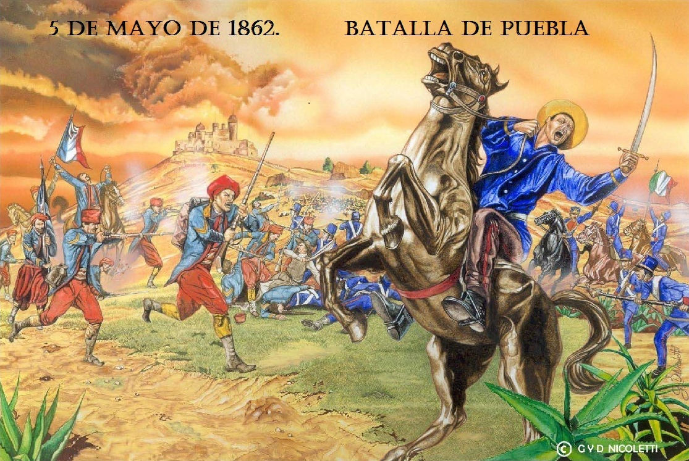
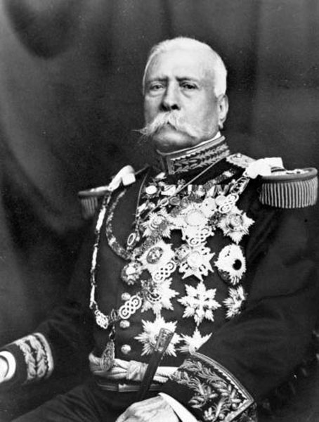

La Batalla de Atlixco tuvo lugar el 4 de mayo de 1862 en las inmediaciones de la Hacienda de las taperas en Arlixco en el estado de Puebla Mexico, entre elementos del ejército mexicano de la república, al mando de los generales Antonio Carvajal y Tomas O'Horan contra las tropas al servicio del Segundo Imperio Mexicano comandadas por el general Jose Maria C abos y de Leonardo Marquez, compuesta de soldados conservadores mexicanos en apoyo de envío de refuerzos para llevar a cabo la Batalla de puebla, durante la Segunta Intervension Francesa en Mexico
Esta batalla culminó con una victoria republicana y debido a esto el grupo conservador de Márquez no pudo lograr su objetivo de auxiliar a las tropas francesas del Conde de Lorecez en la batalla de Puebla.
La historia de la Batalla del 4 de mayo de 1862 relata que, durante la segunda intervención francesa en México, en la hacienda de La Trapera, los atlixquenses y elementos del ejército mexicano de la república, al mando de los General Antonio Carvajal y Tomas O´Horan se enfrentaron a las tropas al servicio del Segundo Imperio Mexicano comandadas por el Gral. José María Cobos y de Leonardo Márquez.
Y que, gracias a este triunfo, el grupo conservador de Márquez no pudo lograr su objetivo de auxiliar al día siguiente a las tropas francesas del Conde de Lorencez en la batalla de Puebla.

Este 5 de Mayo se conmemora el aniversario de la Batalla de Puebla que tuvo lugar en el año de 1862 cuando México era presidido por Benito Juarez y fue atacado por el Ejército Francés que en ese entonces era considerado como invencible ya que no había perdido una batalla en más de 50 años. La historia de la Batalla de Puebla es sin duda un episodio que los mexicanos debemos conocer y admirar.
En octubre de 1861, Francia, Inglaterra y España suscribieron la Convención de Londres, en la cual se comprometieron a enviar contingentes militares a México ya que este tenía una gran deuda de 80 millones de pesos, aproximadamente eran 69 millones para los ingleses, 9 millones para los españoles y 2 millones para Francia.
La alianza tripartita amenazó al presidente Benito Juarez con una invasión inminente si no se saldaba por completo las deudas que México tenía con los tres países europeos.
Juarez responde con un exhorto para lograr un arreglo amistoso, y los invitó a conferenciar. Sin embargo, sabía que había una guerra inminente y trató de proteger la Ciudad de México trasladando pertrechos y ordenó la fortificación de Puebla. Creo al Ejército de Oriente y el hombre que se designó en el mando fue el general Ignacio Zaragoza.

Con 4,000 hombres, el general Ignacio Zaragoza concentró sus fuerzas en Puebla para su defensa, ordenando que se levantaran barricadas en las calles y resguardándose en tres cerros que rodean la ciudad con los fuertes de San Juan, Guadalupe y Loreto. El Ejército de Oriente, estaba dirigido por los generales Miguel Negrete, Felipe Berriozabal, Porfirio Díaz, Francisco Lamadrid, Santiago Tapia, Antonio Álvarez, Antonio Carbajal y Tomás O’Horán; siendo Negrete quien, al mando de 1,200 soldados, defendería los fuertes, y quien llevó el peso de la batalla, auxiliado por los demás generales, dirigidos por el general Zaragoza.
La batalla duró más de cuatro horas y, a las 05:49 de la tarde, el general Ignacio Zaragoza, envía vía telegráfica al presidente Juárez, las siguientes palabras: “las armas del supremo gobierno se han cubierto de gloria.” y en el parte de hechos agregó después: “El ejército francés se ha batido con mucha bizarría; su general en jefe se ha portado con torpeza en el ataque”. Zaragoza calculó las bajas del enemigo en más de mil, entre muertos y heridos, además de ocho prisioneros, y 400 de parte de los connacionales.
Pero justo cuando más necesitaban al general Zaragoza, enfermó gravemente de tifo y el 8 de septiembre del mismo año murió en la ciudad de Puebla, siendo sustituido por el general Jesús González Ortega al mando del Ejército de Oriente, que se preparaba para seguir resistiendo el avance de los franceses. Puebla fue sitiada un año después y tras dos meses se rindió el 17 de mayo de 1863. Ante tal noticia, el presidente Juárez abandona la Ciudad de México y se traslada a San Luis Potosí. Las fuerzas franco-mexicanas entraron a México el 10 de junio, al mando del general Elías Frédéric Forey, enviado por Napoleón III con tropas de refuerzo y para sustituir a Lorencez. Mientras, Luis Bonaparte, sobrino de Napoleón I, aliado con los conservadores, comienza los preparativos para recibir al príncipe Fernando Maximiliano de Habsburgo, archiduque de Austria, segundo Emperador de México.

En octubre de 1861, Francia, Inglaterra y España suscribieron la Convención de Londres, en la cual se comprometieron a enviar contingentes militares a México ya que este tenía una gran deuda de 80 millones de pesos, aproximadamente eran 69 millones para los ingleses, 9 millones para los españoles y 2 millones para Francia.
La alianza tripartita amenazó al presidente Benito Juarez con una invasión inminente si no se saldaba por completo las deudas que México tenía con los tres países europeos.
Juarez responde con un exhorto para lograr un arreglo amistoso, y los invitó a conferenciar. Sin embargo, sabía que había una guerra inminente y trató de proteger la Ciudad de México trasladando pertrechos y ordenó la fortificación de Puebla. Creo al Ejército de Oriente y el hombre que se designó en el mando fue el general Ignacio Zaragoza.
En un principio la Alianza Tripartita aceptó el llamado al diálogo de Benito Juarez y sus representantes se reunieron con Manuel Doblado, ministro de Relaciones Exteriores del gobierno mexicano, quien consiguió que Juan Prim, representante español, y Lord John Russell por Inglaterra se retiraran. A este acuerdo se le conoce como los Tratados Preliminares de la Soledad.

Entre diciembre de 1861 y enero de 1862 las flotas armadas de España, Francia e Inglaterra, desembarcaron en Veracruz para ocupar las aduanas, presionar al gobierno mexicano y recuperar sus capitales. Los representantes de España e Inglaterra, el general Juan Prim y el embajador Charles Wyke, aceptaron negociar y llegar a un entendimiento con el ministro del exterior Manuel Doblado por lo que reembarcaron sus tropas y regresaron a sus países; no así el francés que exigió el pago inmediato de la deuda y Charles Ferdinand Latrille Conde de Lorencez siguiendo la consigna de Napoleón III, continuó con los planes de establecer una monarquía en México. Esto provocó la ruptura de la alianza tripartita y el incumplimiento de los ‘Tratados preliminares de La Soledad’; con lo que da inicio al conflicto armado entre México y Francia siendo el 19 de abril de 1862 cuando se realizan los primeros disparos en El Fortín en Veracruz. Los franceses y mexicanos conservadores establecieron un simulacro de gobierno en Orizaba, Veracruz encabezado por el general Juan Nepomuceno Almonte para que los representara. En respuesta, Benito Juárez expidió un decreto declarando traidores a los mexicanos que colaboraran con los franceses e hizo un llamado a tomar las armas, autorizando a los gobernadores de los estados a realizar acciones al respecto y les pidió que enviaran contingentes militares con los que formó el Ejército de Oriente, logrando reunir cerca de 10 mil hombres, cuyos grupos cargaron sus propias insignias y pertrechos hasta Puebla para fortificarla.
La victoria sobre los franceses en Puebla, hace 155 años, forjó la nación mexicana. "La fecha ha marcado un antes y un después en México porque ni la Revolución ni la Independencia reunieron las fuerzas de todos los estratos contra un solo oponente”, afirma el compositor Sergio Berlioz, creador de la obra 'La luz de mayo'.
La batalla del 5 de mayo es absolutamente presente. Porque pareciera que México necesita un enemigo externo para unir a los mexicanos, cuando en realidad el enemigo es el propio mexicano; lo vemos hoy más que nunca”, dice Berlioz.
Benito Juarez.

Ignacio Zaragaza.

Miguel Negrete.

Porfidio Diaz.

Antonio Alvarez.
Felipe Berrizabal y J. Lamadrid.

Maximiliano.


 2
2 3
3 4
4 6
6